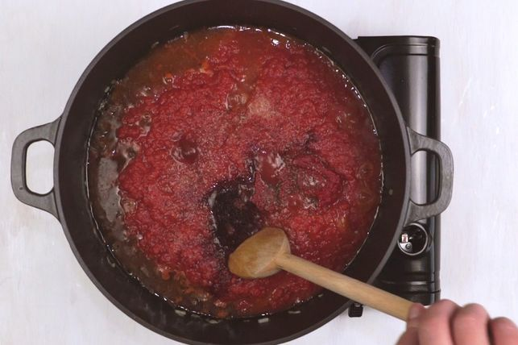
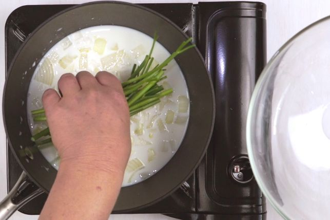
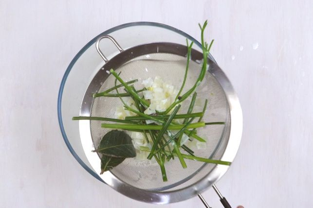
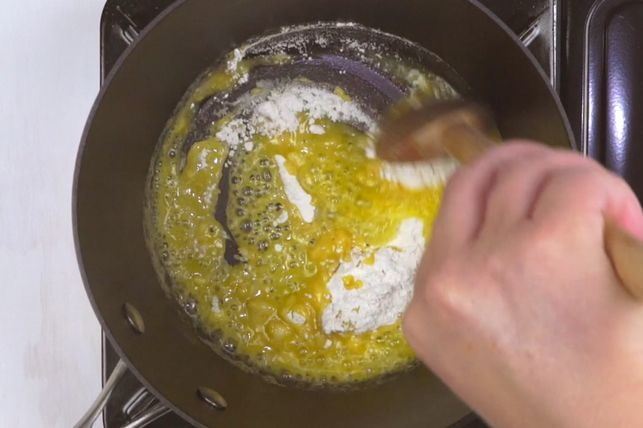
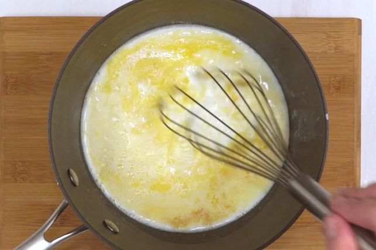
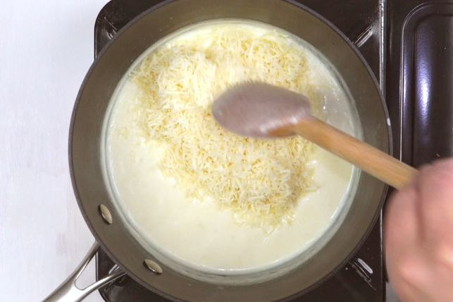
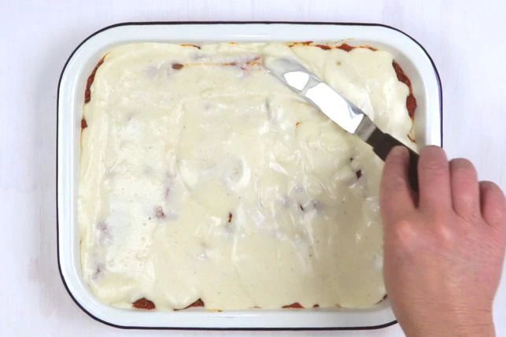
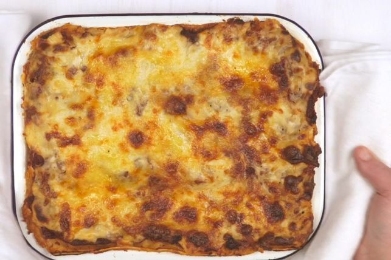

Lasagna Recipe

Description
One of the most loved foods in the world is finally here! This is a traditional Italian Lasagna, made the Italian way with layers of slow cooked Bolognese ragu and cheese sauce. No ricotta - that's the American-Italian version. Though patience is required, it is quite straight forward to make as you will see in the recipe video!
Ingredients
Lasagna Base
- 2 tsp olive oil
- 1 brown onion, finely chopped
- 2 garlic cloves, crushed
- 750g beef mince
- 2 400g canned diced tomatoes
- 125ml dry red wine
- 55g tomato paste
- Salt & Pepper
- 4 lasagna sheets
- 55g coarsley grated cheese
Cheese Sauce
- 1L Milk
- 1 brown onion, coarsley chopped
- 8 fresh parsley stalks
- 8 whole black peppercorns
- 4 whole cloves
- 2 bay leaves
- 60g butter
- 50g plain flour
- 70g finely grated permesan
- Pinch ground nutmeg
- Salt & white pepper
Steps
- Heat the oil in a large frying pan over medium heat. Add the onion and garlic and cook, stirring, for 5 minutes or until onion softens. Add the mince and cook, stirring with a wooden spoon to break up any lumps, for 5 minutes or until mince changes colour. Add the tomato, wine and tomato paste, and bring to the boil. Reduce heat to low. Simmer, uncovered, stirring occasionally, for 30 minutes or until sauce thickens slightly. Remove from heat. Taste and season with salt and pepper.

- Meanwhile, to make the cheese sauce, combine the milk, onion, parsley stalks, peppercorns, cloves and bay leaves in a medium saucepan and bring to a simmer over medium heat. Remove from heat and set aside for 15 minutes to infuse.

- Strain the milk mixture through a fine sieve into a large jug. Discard solids.

- Melt the butter in a large saucepan over medium-high heat until foaming. Add the flour and cook, stirring, for 1-2 minutes or until mixture bubbles and begins to come away from the side of the pan. Remove from heat.

- Gradually pour in half the milk, whisking constantly with a balloon whisk, until mixture is smooth. Gradually add the remaining milk, whisking until smooth and combined.

- Place saucepan over medium-high heat and bring to the boil, stirring constantly with a wooden spoon, for 5 minutes or until sauce thickens and coats the back of the spoon. Remove from heat. Add the parmesan and stir until cheese melts. Taste and season with nutmeg, salt and white pepper.

- Preheat oven to 180°C. Brush a rectangular 3L (12 cup) capacity ovenproof dish with oil to lightly grease. Spread one-quarter of the bechamel sauce over the base of the prepared dish. Arrange 1 lasagne sheet over the sauce. Top with one-third of the mince mixture and one-third of the remaining bechamel sauce. Continue layering with the remaining lasagne sheets, mince mixture and bechamel, finishing with a layer of bechamel. Sprinkle with mozzarella. Place on a baking tray. Bake in preheated oven for 40 minutes or until cheese melts, is golden brown, and the edges are bubbling. Remove from oven and set aside for 10 minutes to set.

- Cut the lasagne into 8 portions and serve with mixed salad leaves.

Did you enjoy this recipe? Check out our others, or return home